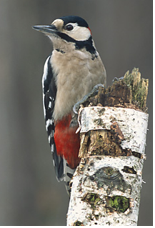

(백엔드 애들이 받아올 사용자 아이디)님 로그아웃

· 이름 : 딱따구리(Woodpecker)
· 수명 : 30년
· 크기 : 14~53cm
· 먹이 : 곤충 및 유충, 나무 열매, 수액
· 서식지 : 동남아시아, 아프리카
· 부연 설명 : 나무를 쪼아 먹는 독특한 새이다. 부리로 둥지를 짓고, 나무에 구멍을 내 곤충을 잡아 먹고, 두꺼운 나무를 두드려 수액을 먹을 정도로 튼튼하다.
보통 하루에 최대 1만2000회까지 나무를 쪼며, 10cm나 되는 혀에 가시가 달려 곤충을 쉽게 핥아 먹을 수 있다.
깃털 색상은 검은색, 흰색, 빨간색 등 다양하다.
발가락이 앞쪽으로 2개, 뒤쪽으로 2개 있기때문에 효율적으로 나무를 잡고 매달릴 수 있고, 목의 근육과 척추가 강하고 유연해서 끊임없이 부리로 나무를 쪼아도 견딜 수가 있다.
· 수명 : 30년
· 크기 : 14~53cm
· 먹이 : 곤충 및 유충, 나무 열매, 수액
· 서식지 : 동남아시아, 아프리카
· 부연 설명 : 나무를 쪼아 먹는 독특한 새이다. 부리로 둥지를 짓고, 나무에 구멍을 내 곤충을 잡아 먹고, 두꺼운 나무를 두드려 수액을 먹을 정도로 튼튼하다.
보통 하루에 최대 1만2000회까지 나무를 쪼며, 10cm나 되는 혀에 가시가 달려 곤충을 쉽게 핥아 먹을 수 있다.
깃털 색상은 검은색, 흰색, 빨간색 등 다양하다.
발가락이 앞쪽으로 2개, 뒤쪽으로 2개 있기때문에 효율적으로 나무를 잡고 매달릴 수 있고, 목의 근육과 척추가 강하고 유연해서 끊임없이 부리로 나무를 쪼아도 견딜 수가 있다.